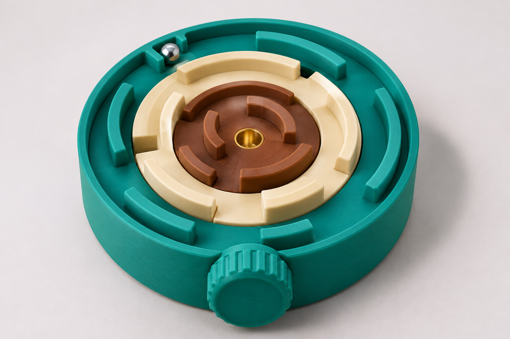
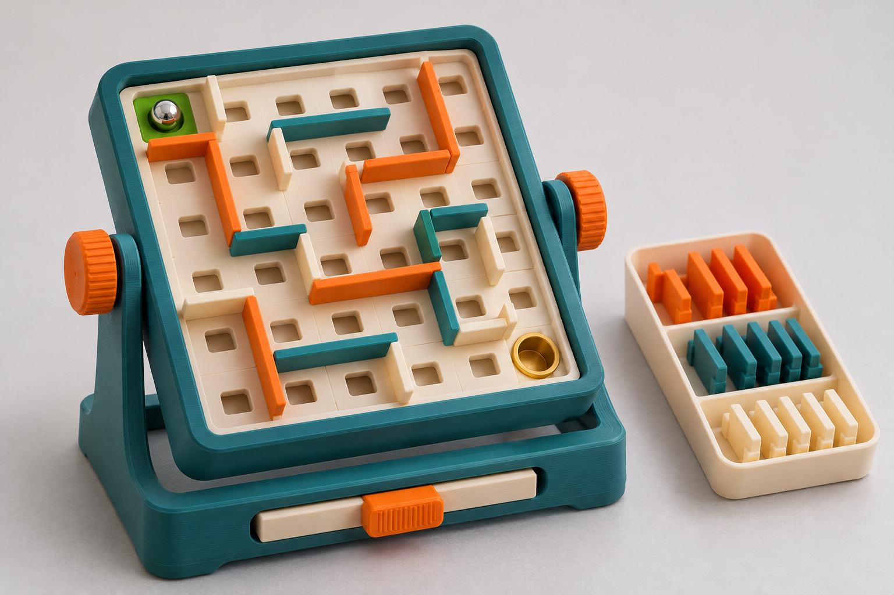
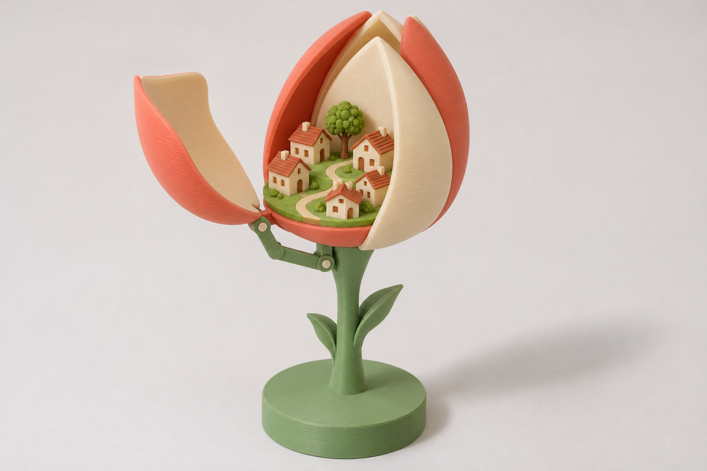
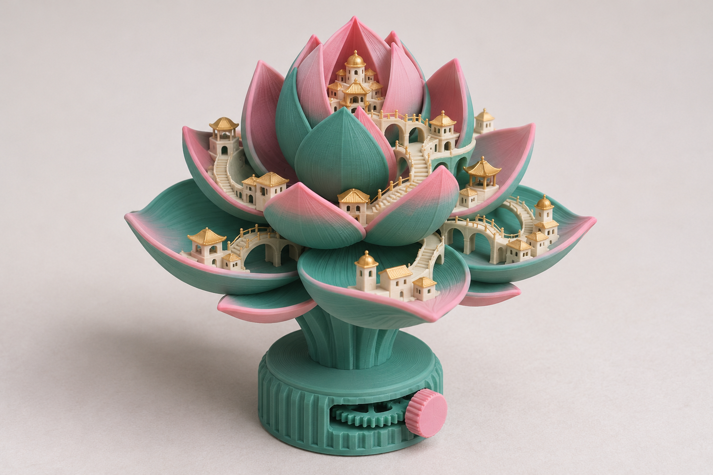
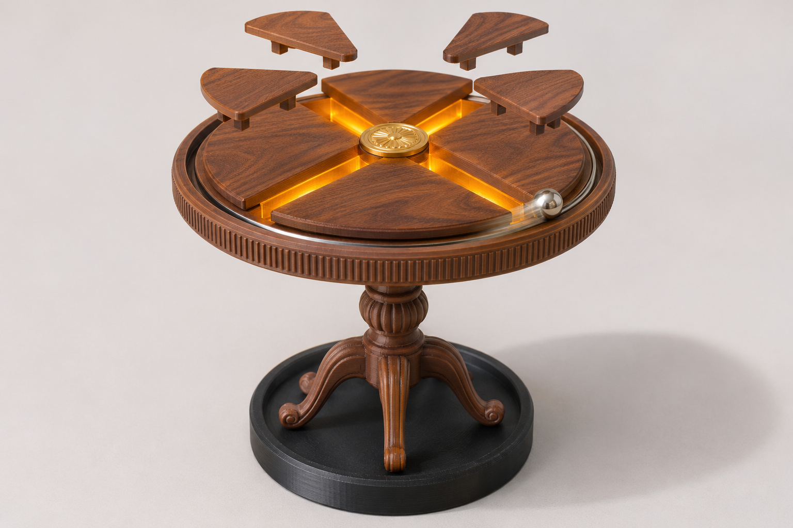
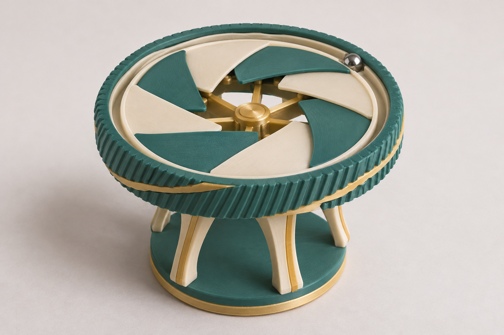

3 vòng xoay lồng nhau, xoay núm là mê cung đổi đường (không nghiêng). Lỗi: núm nằm ngoài, bi dễ kẹt ở khe vòng.

Mê cung nghiêng kiểu Etsy, tường rời cắm vào lưới 6x6 + khay tường dự phòng + thanh shuffle. Gần prior art nhất.

Nụ tulip, một cánh bật mở bằng cần gạt lộ thị trấn 5 nhà. Lỗi: cần gạt vẽ hơi mơ hồ.

Nụ sen, thị trấn bậc thang trên cánh, núm bánh răng mở/đóng. Chi tiết nhỏ (nhà, cầu) khó in FDM.

Bàn cổ óc chó, 4 nêm trượt ra, ánh hổ phách qua khe, bi thép chạy vành. Lỗi: 4 lá rời vẽ lơ lửng.

Bàn trà xanh teal, 8 lá mở như màn trập, vành xoay, bi thép. Đã mở nửa.